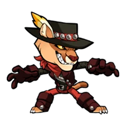
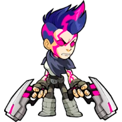
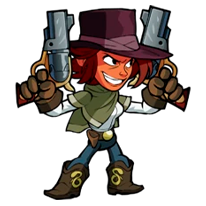
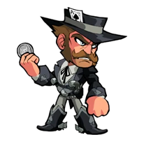
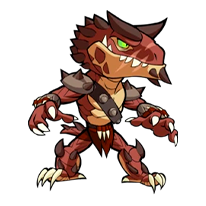
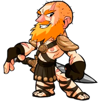
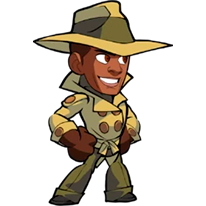
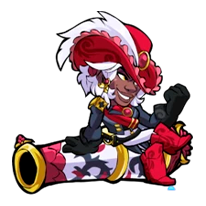
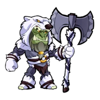
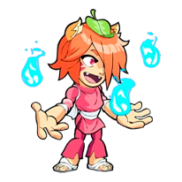

[ Volver atrás ]
| Cofre Bandido | |||
|---|---|---|---|
 |
Precio | ||
 100 por apertura 100 por apertura
|
|||
Skins Exclusivas

|

|
 | ||||
| Aces High Caspian | Sidewinder Hattori | Badlands Asuri |
|---|
Skins
|  |  |  |

|
||||||
| Wasteland Ada | Serape Kid Cassidy | Double Cross | Ember the Hunter |
|---|

|

|

|
 | ||||||
| Ronin Koji | Plague Doctor Lucien | Grim Reaper Nix | Ragnirsaurus Rex |
|---|
|  |

|
 |

|
||||||
| Roland The Victorious | Steamsmith Scarlet | Gumshoe Sentinel | Perfect Wu Shang |
|---|
|  |  |  | ||||
| Pirate Queen Sidra | Artic Trapper Xull | Lil' Yumiko |
|---|